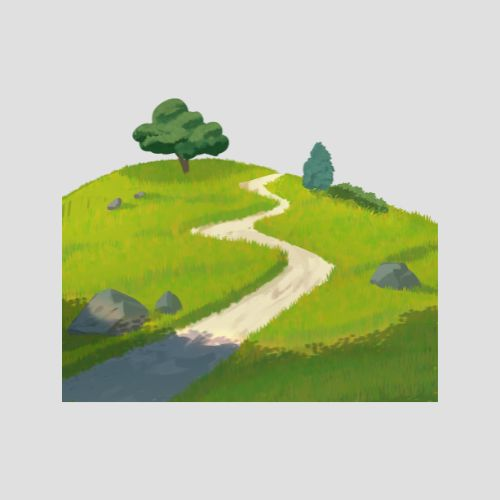
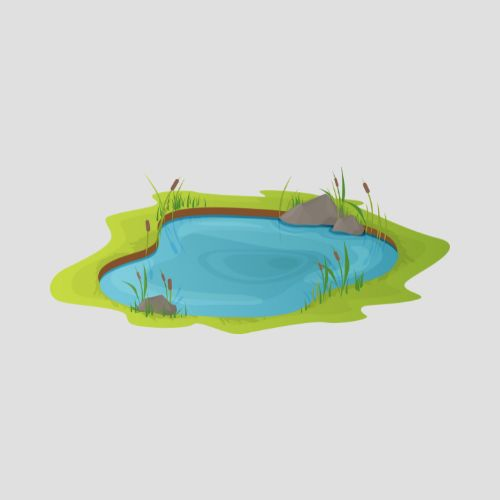
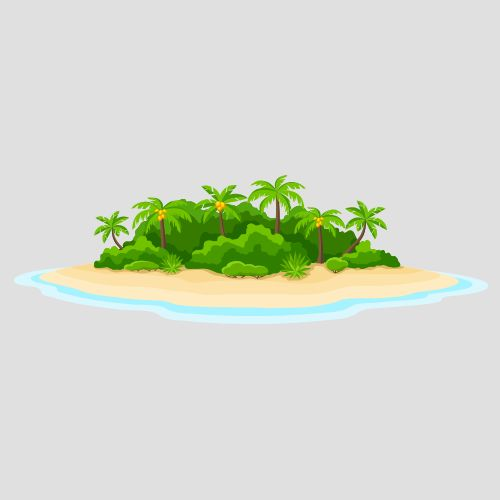

Selamat Datang di Sulawesi Tengah
Sulawesi Tengah menyimpan pesona alam yang memukau mulai dari taman nasional, pantai eksotis, hingga budaya unik suku Kaili. Dengan bentang alam yang beragam, provinsi ini menawarkan pengalaman wisata yang tak terlupakan bagi setiap pengunjung.
Destinasi Unggulan

Danau Tambing
Surga bagi burung

Danau Poso
Danau Terdalam Ketiga di Indonesia
Air terjun saluopa
Memiliki 12 tingkatan air
Jelajahi Berdasarkan Kategori

Pantai

Air Terjun

Danau
Bukit
